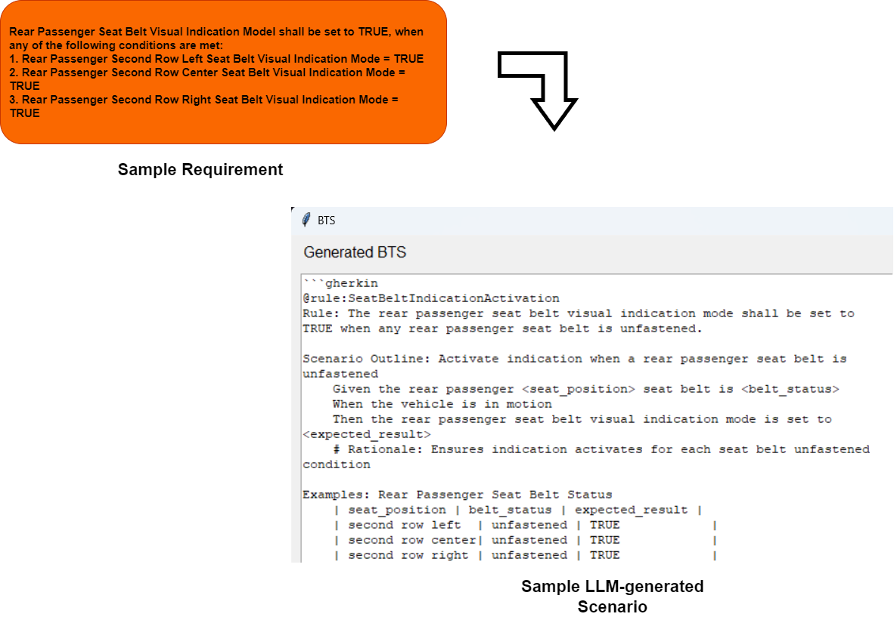
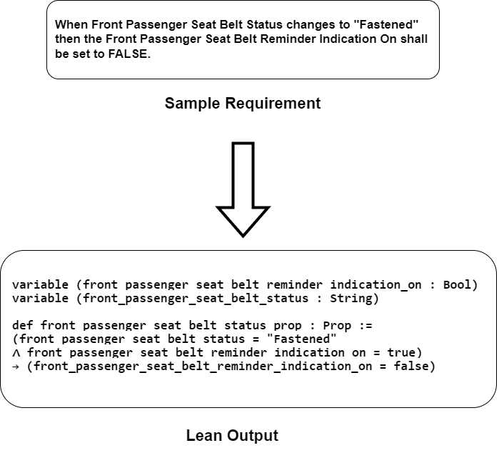
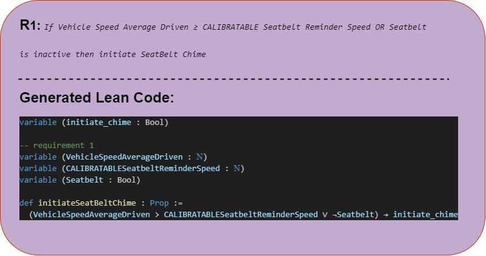
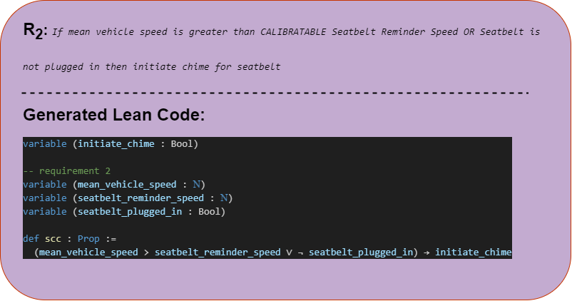
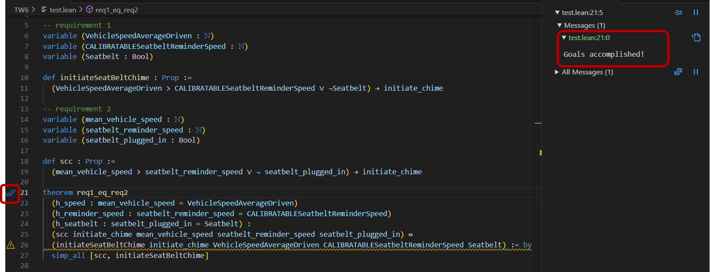
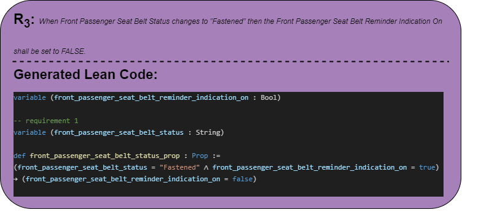
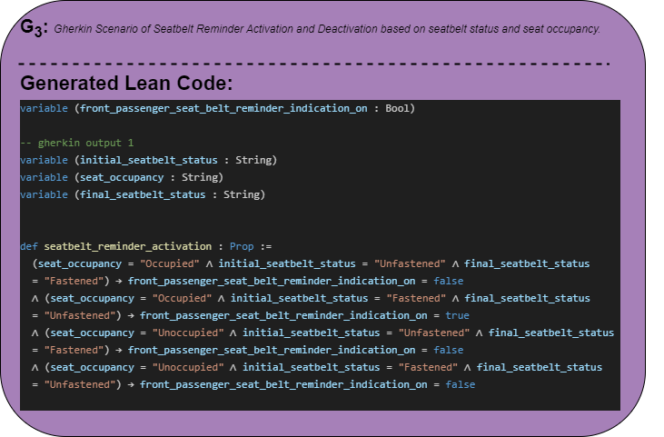
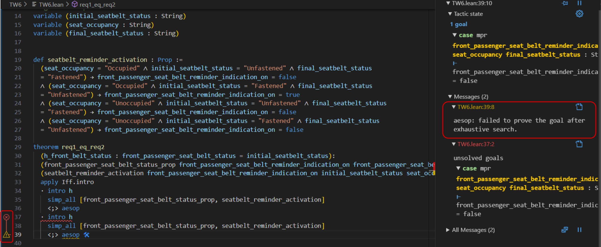
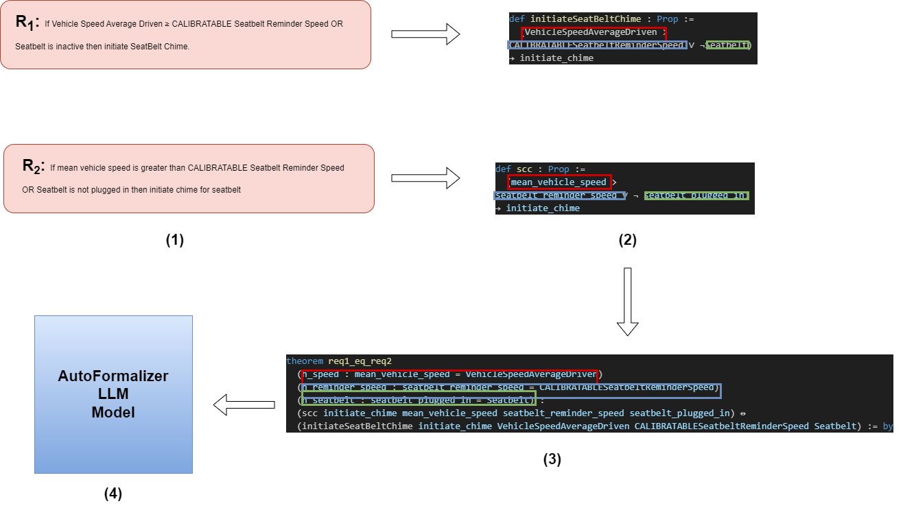
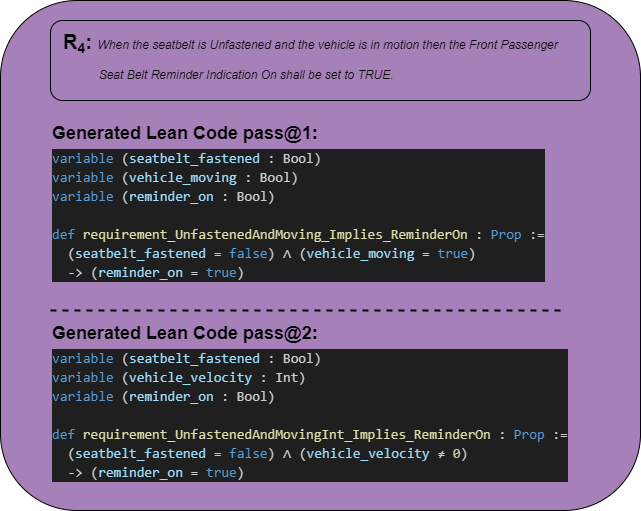

Autoformalization, the process of translating informal statements into formal logic, has gained renewed interest with the emergence of powerful Large Language Models (LLMs). While LLMs show promise in generating structured outputs from natural language (NL), such as Gherkin Scenarios from NL feature requirements, there's currently no formal method to verify if these outputs are accurate. This paper takes a preliminary step toward addressing this gap by exploring the use of a simple LLM-based autoformalizer to verify LLM-generated outputs against a small set of natural language requirements. We conducted two distinct experiments. In the first one, the autoformalizer successfully identified that two differently-worded NL requirements were logically equivalent, demonstrating the pipeline's potential for consistency checks. In the second, the autoformalizer was used to identify a logical inconsistency between a given NL requirement and an LLM-generated output, highlighting its utility as a formal verification tool. Our findings, while limited, suggest that autoformalization holds significant potential for ensuring the fidelity and logical consistency of LLM-generated outputs, laying a crucial foundation for future, more extensive studies into this novel application.
As Language Model-based (LLM) applications become more prevalent, there's an increased need for a framework to verify their outputs. Concurrently, the field of autoformalization[8], the process of translating informal statements into formal logic, has gained significant traction, fueled by LLMs' impressive ability to translate informal statements into formats like first-order logic.
In this paper, we explore the outputs of a sample tool used for building LLM-powered applications to automate the generation of test case scenarios from natural language requirements. For example, a requirement such as: "Given the vehicle speed $\geq$ 10, When the seatbelt is unfastened, then initiate Seatbelt Reminder Chime" can be used to generate a structured Gherkin scenario. However, a major problem arises: there is no formal method to verify if the LLM-generated scenario accurately reflects the original requirement. Figure 1 illustrates an example of an LLM-generated output for a specific requirement. While these tools show impressive results, a critical gap remains: there is no way to formally verify if the generated scenario matches the given requirement.

This is where Autoformalization presents a promising solution[25]. By translating both the natural language requirement and the LLM-generated output into a formal logical representation, we can use formal verification tools to check for logical equivalence. For this paper, we explore this potential using DeepSeek-Prover[1], an LLM fine-tuned on formal mathematical data, to perform this verification.
In this paper, we take the first steps to explore a novel application of autoformalization in a limited scope:
As high-quality datasets for formal mathematical theorems have become more widely adopted, researchers have begun fine-tuning language models for the sole purpose of theorem proving. While LLMs have shown success in generalizing natural language, generalizing formal mathematics remains a significant challenge. However, recent advancements in reasoning-based models have led to considerable improvement in this area.
A key development is the approach proposed by [4], which uses LLMs to draft proof sketches and decompose complex problems into smaller, more manageable subgoals. This method has become a popular training strategy for autoformalizer models. DeepSeek-Prover-v2 [1] takes this approach by training the model to perform a chain-of-thought process, recursively searching for proofs via subgoal decomposition and resolution. The model is trained on data from formal languages like Lean, which is crucial for our purpose of converting Natural Language into Lean syntax.
DeepSeek-Prover-v2 comes in two versions: a 7B and a 671B model. For this paper, we use the 7B model due to resource constraints. The model's effectiveness for our task stems from two key factors: its training on the Lean 4 formal language, which is necessary for our pipeline, and its extensive pre-training in natural language, which enables it to effectively translate and formalize requirements.
Other notable models trained for formal mathematical verification include those from [5], [7] and [6].
Lean 4 [2] is a powerful theorem prover and formal language. It allows for the expression of complex mathematical and logical statements in a precise, code-like syntax. This makes it the ideal language for most LLM-based formal theorem provers, including DeepSeek-Prover-v2, which is trained to generate proofs in Lean 4. In our experiment, we leverage this capability for two main purposes: to translate natural language (NL) requirements into formal Lean propositions and to formally verify their logical equivalence using theorems.
We use an autoformalizer to convert a given NL requirement into a Lean proposition. Each requirement can be expressed as a logical statement. Given the nature of our requirements (e.g., "If A then B"), they naturally translate into a propositional implication ($A \rightarrow B$). The autoformalizer's output is a theorem proposition that can be evaluated as either true or false.
As seen in Figure 2, a given natural language requirement is transformed into a formal Lean statement by our autoformalizer. This formal representation is the foundation for the verification pipelines described in the following sections.

In formal logic, a biconditional or material equivalence is a logical connective that links two propositions and is true only when both propositions share the same truth value. It is represented by the symbol $\leftrightarrow$, and a statement of the form $A \leftrightarrow B$ can be read as "A if and only if B," or simply, "A is equivalent to B".
In our experiment, we use this principle to formally verify the logical equivalence of two statements. We take a pair of natural language statements — either one requirement and one LLM-generated output, or two distinct requirements — and translate each into a formal proposition using our autoformalizer. Let's call these propositions $P_A$ and $P_B$.
The core of our verification process is a theorem-proving task. We instruct the LLM-based theorem prover to prove the biconditional statement $P_A \leftrightarrow P_B$. The model attempts to prove that the propositions are logically equivalent by demonstrating both the forward implication ($P_A \rightarrow P_B$) and the reverse implication ($P_B \rightarrow P_A$). If the model successfully proves the theorem, we can conclude that the original natural language statements are logically consistent. Conversely, if it cannot, it indicates a logical discrepancy between the two.
We follow a simple workflow for both the experiments that we conduct:
With this, we elaborate on our methodology in detail in the below sections.


Given a set of two natural language requirements:
$R_1$: If Vehicle Speed Average Driven $\geq$ CALIBRATABLE Seatbelt Reminder Speed OR Seatbelt is inactive then initiate SeatBelt Chime
$R_2$: If mean vehicle speed is greater than CALIBRATABLE Seatbelt Reminder Speed OR Seatbelt is not plugged in then initiate chime for seatbelt
These are two different Natural Language statements pointing to the same requirement, however that is very hard to determine unless extensively checked. To automatically verify if they are logically equivalent, we use our workflow. We can see the output generated by DeepSeek-Prover on $R_1$ and $R_2$ in Figure 3 and Figure 4 respectively.
We then need to ground the variables. This effort is done manually. By grounding, we need to manually point to the Lean compiler that a set of variables having different naming conventions actually refer to the same variable. There is scope to automate this process using the LLM as well, however due to certain constraints, we choose to do this step manually. Once we specify that, we provide the model with all the information and ask it to either prove the theorem, if possible. The template format we specify to achieve that is provided in Appendix A. The final result of the LLM-generated Lean 4 code in the Lean compiler is provided in Figure 5.

Given a Natural Language Requirement $R_3$:
When Front Passenger Seat Belt Status changes to "Fastened" then the Front Passenger Seat Belt Reminder Indication On shall be set to FALSE.
and a sample LLM-generated Gherkin Output $G_3$ for $R_3$:
| Examples: Seatbelt status and occupancy variations | |||
|---|---|---|---|
| seat_occupancy | initial_seatbelt_status | final_seatbelt_status | expected_reminder_status |
| Occupied | Unfastened | Fastened | FALSE |
| Occupied | Fastened | Unfastened | TRUE |
| Unoccupied | Unfastened | Fastened | FALSE |
| Unoccupied | Fastened | Unfastened | FALSE |
We hypothesize that the LLM-generated Gherkin scenario ($G_3$), due to its added complexity, will not be logically equivalent to the original requirement ($R_3$). We can see the output generated by DeepSeek-Prover on $R_3$ and $G_3$ in Figure 6 and Figure 7 respectively.
In these set of examples, if we look closely we can observe that the LLM-generated Gherkin scenario $G_3$ contains a lot of extra variables that are not present in the original requirement $R_3$, hence they are logically inconsistent. Specifically speaking, the natural language requirement $R_3$ does not consist references of seat_occupancy and final_seatbelt_status. So ideally, the Lean code provided by the Autoformalizer LLM should either prove they are inconsistent or fail to run.
The final result of the LLM-generated Lean 4 code in the Lean compiler is provided in Figure 8.



The Autoformalization pipeline we explored in this paper to verify LLM-outputs is given by Figure 9. In this pipeline, we do the following things:

The outcome of this step either yields a successful proof, thereby confirming logical equivalence, or a failed proof, which indicates that the statements are not logically consistent. The model's failure to complete a proof in Lean is a key indicator of a discrepancy, as it signals that the two statements cannot be reconciled under the given logical system.
Previous work [8] has noted that informalizing a formal statement is often easier for LLMs than formalizing an informal statement. This difficulty stems from the autoregressive nature of current-generation LLMs, which are heavily reliant on token structure, making them well-suited for generation but less reliable for the precise, rigid syntax required by formal languages.
The core challenge lies in the mismatch between the processes: formalization is, by definition, non-ambiguous and rigid, yet it is being performed by an inherently non-deterministic, probabilistic model. While the flexibility of LLMs allows them to process the varied and informal nature of natural language inputs, the resulting formal output itself should not be subject to non-deterministic interpretation. This problem is magnified when the source material is ambiguous, a common characteristic of system requirements. The resulting formalized interpretation (Lean code, in our case) must accurately capture the precise intent of the requirement, including subtle system nuances.
For example, consider the requirement:
$R_4$: "When the seatbelt is Unfastened and the vehicle is in motion then the Front Passenger Seat Belt Reminder Indication On shall be set to TRUE."
The condition "vehicle in motion" can have different interpretations depending on the system design (e.g., speed $> 0$, or gear not in park).

In Figure 10, theoretically both the generated Lean code snippets represent the input requirement properly given the amount of information about the system. However, they are not formally equivalent because they represent "vehicle in motion" differently: pass@1 represents the variable as a boolean whereas pass@2 represents the variable as an integer and hence it's not possible to formally say that both the code snippets are logically equivalent even though they were derived from the same informal requirement. This represents a flaw of a design solely relying on informal natural language requirements without being grounded in the system more deeply.
In our autoformalization pipeline (Figure 9, $(2) \rightarrow (3) \rightarrow (4)$), a critical and inescapable requirement is the grounding of overlapping variables to prove logical equivalence. This necessity arises because Large Language Models (LLMs) frequently interpret and name variables differently across separate formalizations, even when the underlying concept is the same. For instance, Figures 10, 3 and 4 clearly demonstrate the issue, where a single physical parameter is represented using distinct variable names and types.
This challenge is a direct consequence of an LLM formalizer making assumptions based on limited contextual knowledge of the target system. The inconsistency highlights the necessity of grounding the entire autoformalization pipeline within the system's defined ontology to achieve reliable results.
Although variable grounding is a purely logical process and should ideally be done algorithmically to eliminate human error, it currently remains the most time-consuming step. We propose two primary directions for automating this semantic matching task:
There is significant scope for developing LLM-based solutions to automate grounding. However, automating a verification step using a probabilistic model introduces an ironic challenge: the need to develop a robust verification mechanism for the LLM's own variable-grounding hypothesis. This fundamental trade-off between efficiency and certainty is a central theme for future research in this domain.
Furthermore, the integration of grounding with autoformalization has broader applications for ensuring that LLM-generated Chain-of-Thought reasoning maintains logical consistency within constrained systems (e.g., smart-home systems, vehicle assistants). Since these systems have a limited set of defined actions, future work can focus on: developing a knowledge graph or similar data structure of branching system instructions, creating a mechanism for LLMs to traverse this structure while generating output & employing autoformalization to guarantee that the LLM's generated output is logically consistent with the system's predefined capabilities.
Autoformalization shows significant potential for logically verifying concepts or ideas generated by probabilistic models. However, more research is needed to optimize this approach and address the challenges identified in this paper.
In this paper, we presented a preliminary exploration of two novel applications of autoformalization: the formal verification of LLM-generated outputs against natural language requirements and the checking of logical equivalence among requirements. Our study served as a proof-of-concept, outlining a pipeline that leverages an LLM-based autoformalizer to translate informal statements into formal Lean propositions and then utilizing the autoformalizer to formally prove the equivalence of generated propositions. Through two distinct experiments, we showed that this pipeline holds significant promise for improving the fidelity and consistency of content produced by probabilistic models.
While our findings are based on a limited sample, they suggest that autoformalization can play a pivotal role in bridging the gap between ambiguous natural language and rigorous, verifiable logic. We also identified several critical avenues for further investigation to generalize and strengthen such a pipeline.
Ultimately, this paper lays the groundwork for a formal verification framework. As autoformalization methods mature, we envision them becoming an integral practice for ensuring the correctness, reliability, and trustworthiness of LLM-powered applications.
# Formalize the following requirement using Lean syntax:
{requirement}
Translate the natural language requirement into a formal Lean 4 proposition. The result
should be a `def` statement that defines a proposition (`Prop`).
Complete the following code and substitute the brackets with appropriate variables
from requirements:
The definition should have the following structure:
```lean4
-- define variables here
variable (<VARIABLE> : <TYPE>)
variable (<VARIABLE> : <TYPE>)
def <ACTION_name_FOR_function> : Prop :=
-- include all conditions in the given here and finally they should either imply or not imply the action
(CONDITION A \land CONDITION B \land ...) -> ACTION
```
Given the following Lean code, reason out and finally prove that either:
- the given two functions are logically equivalent and consistent
- the given two functions are inconsistent
Continue and complete the theorem based on the provided code:
```lean4
import Mathlib.Data.Real.Basic
variable (front_passenger_seat_belt_reminder_indication_on : Bool)
-- requirement 1
{requirement_proposition}
-- gherkin output 1
{gherkin_output_proposition}
theorem req1_eq_req2
(h_front_belt_status : front_passenger_seat_belt_status = initial_seatbelt_status):
(front_passenger_seat_belt_status_prop front_passenger_seat_belt_reminder_indication_on
front_passenger_seat_belt_status) <->
(seatbelt_reminder_activation front_passenger_seat_belt_reminder_indication_on
initial_seatbelt_status seat_occupancy final_seatbelt_status) := by
```